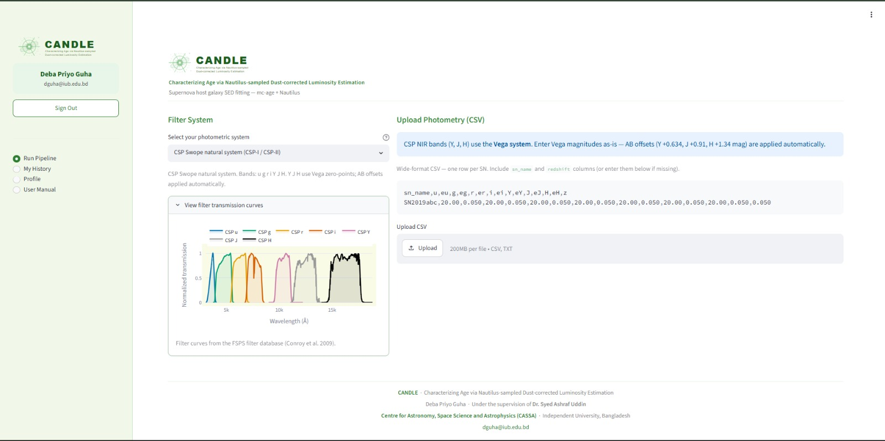
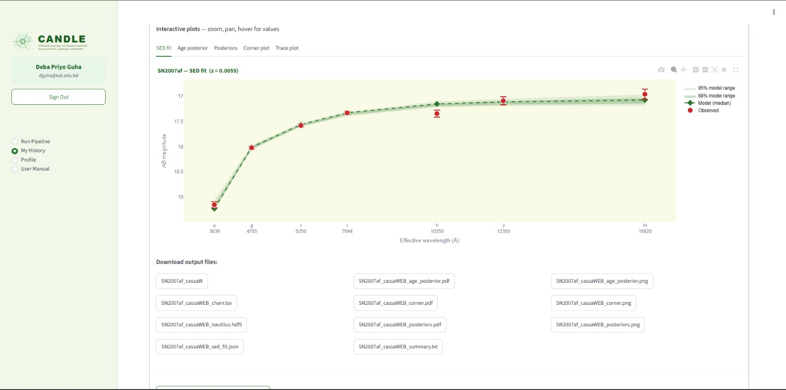

CASSA · Supernova Cosmology
Host-Galaxy Stellar Ages & the
Hubble-Residual Age Step in Type Ia Supernovae
Reproducing Rose (2019), and testing Son (2025) on independent Carnegie Supernova Project data
Deba Priyo Guha
Center for Astronomy, Space Science & Astrophysics (CASSA) · Independent University, Bangladesh
Supervisor: Dr. Syed Ashraf Uddin
Use the arrow keys to navigate, F for fullscreen, Esc for the slide overview.
Why this matters
Motivation
- Type Ia supernovae are the standard candles that revealed dark energy. Their cosmology assumes standardized brightness does not drift with the host galaxy.
- Son (2025) challenges exactly that: a host-galaxy age bias strong enough to remove dark energy altogether.
- Such a strong claim needs an independent check, because it was measured on only one set of host galaxies.
- Our approach: apply Rose's global-age method, the established tool, to independent CSP data with near-infrared bands.
In one sentence: use Rose's tool to test Son's claim, on data Son never used.
The whole story in one slide
Summary
🔧 Rose (2019)
the TOOL: his global-age method
🎯 Son (2025)
the TARGET: the claim we refute
👁️ Wiseman (2026)
the WITNESS: "dark energy is safe"
- Son: age bias so strong it kills dark energy
- But he never tested it on independent data
- We reproduce Rose's global-age method
- We prove it is sampler-independent (Nautilus)
- We run it on independent CSP + NIR data
- The strong bias does not reproduce
- Wiseman independently agrees: DE survives
- A public tool (CANDLE) + three papers
One line: Measure with Rose, refute Son, corroborated by Wiseman. We oppose Son.
The claim we test · our main target
🎯 Son (2025) — What He Claims
Son, Lee, Chung, Park & Cho 2025 · MNRAS · "Strong Progenitor Age-bias II" · arXiv:2510.13121
Claim: a 5.5σ correlation between standardized SN magnitude and host progenitor age, largely uncorrected by the mass-step (age and mass evolve differently with z). Corrected as a function of redshift, the SNe align with DESI's w₀wₐCDM; SNe + BAO + CMB give > 9σ tension with ΛCDM → a currently non-accelerating Universe, "no dark energy."
- His evidence: Chung 2025 (Paper I) 5.5σ on ~300 hosts (z < 0.45); Kang 2020 + Lee 2020/22 spectroscopic ages; an "evolution-free test" using only young, coeval hosts.
- The crack (our hypothesis): he brought no new data — he re-measured ages on the same R19 + G11 galaxies. "Ubiquitous" was never tested on an independent survey.
- So our plan: run Rose's exact method on data Son never touched (CSP + NIR) and see if the strong bias survives. We disprove it step by step.
Our tool · the method we borrow
🔧 Rose (2019) — Why We Use It
Rose, Garnavich & Berg 2019 · ApJ 874, 32 · "Think Global, Act Local"
Claim: after standardization, SN Ia in older environments stay slightly over/under-luminous — a real host-age step ≈ 0.114 ± 0.039 mag near ~8 Gyr (2.9σ). Age is a genuine third parameter beyond shape and colour.
- Method & sample: FSPS Bayesian SED fitting (SFH = 5, emcee) on 103 Campbell (2013) SDSS-II hosts — the exact mc-age pipeline we reproduce bit-for-bit, so no one can blame a different recipe.
- Global age = the age of the whole galaxy, not just the spot by the SN. His signal is modest (direct correlation global 2.1σ; PCA 4.7σ with local age), and his title leans local.
- Our stand — FOR us (the tool): keep his real global step, drop the "act local" emphasis Son inflates. Both Son and Rose use whole-galaxy age → the fight is not global vs local, but how strong the effect is and whether it is everywhere.
Theory
How mc-age Works: the Theory
- Bayesian SED fitting. A galaxy's light across bands = its spectral energy distribution (SED).
- FSPS = forward model: parameters θ (age, τ, metallicity, dust, z) → predicted magnitudes.
- Likelihood = χ² between model and observed magnitudes. Closer fit, higher likelihood.
- Prior keeps θ physical; a sampler explores θ for the posterior on age. Rose's sampler is emcee (MCMC walkers).
Posterior ∝ Likelihood × Prior
P(θ | data) ∝ L(data | θ) · π(θ)
mass-weighted age:
tage = tuniv − ∫ t·ψ(t) dt ⁄ ∫ ψ(t) dt
ψ(t) = star-formation history. "Old belief (prior) + new evidence (likelihood) = updated belief (posterior)."
Worked example
mc-age in Action: SN762
SN762 observed (z = 0.19139):
u=20.34 g=18.50 r=17.46 i=17.01 z=16.70
→ faint in blue (u), bright in red (z) = old, red host
- Try age = 2 Gyr → model too blue → rejected.
- Try age = 7 Gyr → model matches all 5 bands → fit!
- Our Nautilus output: host age ≈ 7.8 Gyr, an OLD host.
Live: best-fit model SED (emcee + nautilus) vs observed SDSS photometry — hover any band
Robustness
Trouble in mc-age → Test Six Samplers
- emcee is slow. It runs the FSPS model about 2.2 million times per galaxy, so each supernova takes hours.
- The worry: if we swap the search tool, does the age change? If it does, the answer cannot be trusted.
- So we run the same model with six different tools, and check they all give the same age.
emcee
Rose original
emcee-latest
modern rebuild
Nautilus
neural nested
MultiNest
ellipsoidal nested
dynesty
dynamic nested
BAGPIPES
different model
Theory
Nautilus: the Theory
- Nested sampling: spread many test points over the full range. Each round, drop the worst one and shrink the search inward.
- Like a nautilus shell spiralling to its centre, the search closes in on the best answer.
- It naturally finds two-peak cases, where emcee's random walk often gets stuck on just one.
The clever part: Nautilus builds a small helper model from the points to guess where the good region is. This is not deep learning on data, just a faster way to search.
Bonus: Nautilus also gives the evidence Z for free, a number that lets us compare models. emcee cannot do that easily.
Paper 1 · why Nautilus is faster
Why We Settled on Nautilus: the Race
- The race: same setup, 6 tools, one node. Who converges the most hosts in 12 h?
- SN762 single-object: Nautilus fastest in both wall (0.32 h) and compute (10.2 core-h), ~1.85× cheaper than MultiNest, ~60× cheaper than emcee.
- Throughput (6 cores, 12 h): Nautilus 11 vs MultiNest 9 hosts; emcee & dynesty finished 0.
- Why faster: it prunes bad regions early and reuses its helper model, so it needs far fewer FSPS calls — plus higher n_eff, honest error bars, evidence Z, and two-peak handling.
Nautilus checks · interactive
Cross-checks & the Age–Mass Degeneracy
Rose (2019) global age vs ours (97 hosts). Ages track within errors; weighted offset +0.64 ± 0.29 Gyr (P1).
Gupta (2011) age vs ours. −0.43 ± 0.52 Gyr, consistent.
The degeneracy: from broadband colours alone an old metal-rich galaxy and a younger dusty one can look identical (age–metallicity–dust). Photometry cannot fully separate them; NIR bands help, and spectroscopy (D4000, Balmer lines) is the true fix. Both cross-checks (Campbell/Rose and Gupta) agree within errors, with x + y error bars on every point.
Independent age check
✅ Gupta (2011) — the Cross-check Paper
Gupta, D'Andrea, Sako et al. 2011 · ApJ 740, 92
Claim: an early, independent SED-fit measurement of host stellar ages for SDSS-II SN Ia, with an early hint that older hosts leave a residual after standardization. Pre-dates Rose, using a separate pipeline and different SPS models.
- What it gives us: a published external age catalog (~206 hosts, Age−/Age/Age+) — a second independent anchor alongside Rose.
- Our stand — FOR us: our Nautilus ages vs Gupta on 33 shared hosts = −0.43 ± 0.52 Gyr, Spearman ≈ 0.68 — consistent within errors. Our ages are not a quirk of one pipeline.
The independent test
The Carnegie Supernova Project (CSP)
- What: CSP-I, 126 SN Ia (Swope 1-m, Las Campanas), median z = 0.025. Bands u g r i + NIR Y J H.
- Why: hosts largely outside Son's R19/G11 samples, and the NIR breaks the degeneracy optical-only ages suffer — the decisive independent test.
- SDSS → CSP: Rose used SDSS (5 bands, already AB). CSP is a different instrument — 7 useful bands in a natural photometric system. Same physics, new data.
The logic: if Son's bias is truly strong & ubiquitous, it must appear in CSP. If it vanishes on independent NIR data, the claim does not generalize.
How CSP photometry works
Filter Curves: Why One Band Can Read Two Values
- A filter transmission curve S(λ) = the fraction of light passed at each wavelength (telescope × filter × CCD × atmosphere). A magnitude = the galaxy's SED folded through S(λ).
- Same galaxy, two values: SDSS-u and CSP-u are different curves, so they read slightly different magnitudes — and CSP's natural system needs an AB offset before comparing with FSPS.
- Even one survey has two "V / J": CSP swapped physical filters mid-survey (V before/after 2006, J before/after 2009), so the right curve depends on the SN's observation date.
So we register the correct CSP filters into FSPS and apply the right AB offsets (next slide). Get the filter wrong and the age fit rails.
Live u g r i Y J H curves are shown on the CANDLE home page (later).
Worked example · CSP-I
mc-age on CSP: SN04dt, our First Host
CSP magnitudes are in the natural system, not AB. For each band we apply one line before fitting:
mfit = mnatural − AMW(Fitzpatrick 99) + δAB
δAB: u −0.06 · g −0.02 · r −0.01 · i 0.00
Y +0.63 · J +0.91 · H +1.34 (NIR is large)
B and V are dropped (their light is already covered by u+g and g+r). 4–7 bands used per host.
| Correction | Age (Gyr) | log Z | Fit |
|---|
| none | 12.01 | −77 | railed (bad) |
| + AB offset | 10.70 | −0.84 | good |
| + AB + MW dust | 10.36 | −1.05 | final ✓ |
Converged, n_eff = 692. An old elliptical host — exactly what its red SED implies. The big NIR offsets (H +1.34) and Milky-Way dust removal are what turn a railed fit into a clean one.
The CSP foundation
✅ Uddin et al. (2024) — Our Data Foundation
Uddin, Burns, Phillips et al. 2024 · ApJ 970, 72 · CSP-I & -II H₀ · public h0csp (after Uddin 2017, first host-influence map)
Claim: the Carnegie Supernova Project H₀ analysis — delivers SALT2 / SNooPy-standardized distances, Hubble residuals and host stellar masses for the CSP sample, and documents the host mass-step in CSP.
- Why it matters: peer-reviewed CSP standardization — the exact ground our independent test stands on (residuals we did not measure ourselves).
- Our stand — FOR us (the foundation): we split his published residuals by our independent NIR ages to look for the step (provisional), and his masses anchor our FSPS / BAGPIPES mass cross-checks. Dr. Uddin is our supervisor and the CSP-side anchor.
CSP · interactive
Host Age vs Redshift
Drag to zoom · double-click to reset. CSP-I · CSP-II
CSP · interactive
Host-Galaxy Age Distribution
CSP hosts skew old (median ≈ 9.2 Gyr), with few very-young systems. Remember this for the result.
CSP · interactive · mc-age Nautilus
Nautilus: Mass & Fit vs Dr. Uddin
Stellar mass vs Dr. Uddin (B_ceph). CSP-I + CSP-II combined.
Observed vs model magnitude, all bands. On 1:1 = good fit.
FSPS mass sits ~+0.68 dex high (Mformed vs Mliving), so mc-age is trustworthy for AGE, not mass. 27 bimodal hosts used the MultiNest fallback.
CSP · interactive · BAGPIPES cross-check
Why BAGPIPES? Mass & Fit vs Dr. Uddin
BAGPIPES mass (Mliving) vs Dr. Uddin (B_ceph).
Observed vs model magnitude, all bands.
Why suddenly BAGPIPES? mc-age is excellent for age, but its FSPS mass is Mformed (biased high). BAGPIPES is a different code (BC03 + delayed-τ) that reports Mliving. If a completely different SFH model still agrees, the result is trustworthy — not a code artefact. Caveat: some Z-PEG masses are placeholder-capped at 11.5, flagged for Dr. Uddin.
CSP · BAGPIPES · Dr. Uddin's request
Host Mass vs Star-Formation Rate
Dr. Uddin asked for a Mass vs SFR plot of all host galaxies. Here are all 332 BAGPIPES CSP hosts.
Star-forming hosts follow the main sequence: more massive galaxies form more stars (fitted slope ≈ 0.50).
Many CSP hosts are quiescent — they barely form stars. Their SFR is almost zero, so the log is undefined.
To keep them on the plot, we use the offset method: we plot log(SFR + ε) with a tiny ε = 0.001. All dead hosts then line up at the floor (−3) instead of being dropped.
191 of 332 hosts sit at the floor (quiescent). CSP hosts skew old and passive, as expected.
Our exploratory attempt
The Hubble-Residual Step
We tried deriving the age step against Dr. Uddin's published residuals (Uddin 2024), using his own weighted-mean formula:
err_int = std(Δμ)² − mean(σ)²
wᵢ = 1 / (σᵢ² + err_int)
μ̄_low = Σ(Δμ·w)[low] / Σw[low]
Δμ(step) = μ̄_low − μ̄_high
Provisional: +0.032 ± 0.064 (0.50σ) & −0.020 ± 0.044 (0.46σ). Neither significant.
Provisional: a preview, not a claimed headline
This is our own exploratory look, shown as a preview. The solid deliverable is the independent NIR age catalog; the HR step is a natural next step to develop further.
The debate · overview (details next)
Who Is For Us, Who Is Against
| Paper | Position | For / against us |
|---|
| Rose 2019 · Gupta 2011 · Uddin 2024 | Age real but modest · independent age check · CSP residuals | for us |
| Wiseman 2026 (+Riess, Sullivan…) | Rebuts Son: SN Ia cosmology robust; dark energy safe | for us (half-ally*) |
| Son 2025 · Sah 2026 · Lee 2020 · Chung 2025 | Strong ubiquitous bias → no dark energy | ❌ against us |
*Wiseman is with us on dark energy, but says age is negligible, while we and Rose say age is real. Our line: age real + dark energy safe → reject Son's over-reach.
The debate · the rebuttal (for us)
👁️ Wiseman (2026) — the Witness
Wiseman, Popovic, Sullivan, Riess, Scolnic … Schmidt, Smith, Vincenzi 2026 · MNRAS · arXiv:2601.13785
Claim: an explicit rebuttal of Son — the evidence is negligible or already corrected. (1) S25 omits the host-mass correction; add it back and the host-age dependence vanishes. (2) DES measures the host-effect evolution as −0.028 ± 0.034 mag z⁻¹ (consistent with 0, shifts w by < 0.01). (3) The ~5 Gyr age gap is overstated 3–5× (host age conflated with progenitor age). SN Ia cosmology stays robust — dark energy is safe.
- Our stand — FOR us on dark energy: our ally against Son's cosmological claim.
- Half-ally, though: he calls age negligible once mass is controlled, while we and Rose find the global age step is real (~0.114 mag). Our line: age real at fixed z + dark energy safe.
The debate · the extreme end (against us)
🎯 Sah (2026) — Son Pushed Further
Sah, Rameez & Sarkar 2026 · MNRAS · "Pantheon+ corrected for progenitor age is decelerating" · arXiv:2606.09650
Claim: apply Son's redshift-dependent age correction — Δm(z) = Δage(z) × 0.030 mag Gyr⁻¹ — to Pantheon+ via redshift tomography. The monopole of the deceleration parameter q₀ flips to positive (deceleration), while the local bulk-flow dipole is unchanged. The most extreme pro-Son cosmology.
- Its premise: a Supernova Progenitor-Age Distribution × cosmic star-formation history; the 0.030 mag Gyr⁻¹ slope is averaged from Chung 2025 / Gupta 2011 / Rose 2019, inside a bulk-flow anisotropy framework.
- Our stand — AGAINST (same rebuttal, sharper): a q₀-flipping bias must appear in independent NIR-broken CSP ages — it does not. Even Sah notes Wiseman (2026) shows the mass correction removes the age–residual link; optical-only ages carry the degeneracy our NIR breaks.
Deliverable · a public tool
Our Website: CANDLE
Characterizing Age via Nautilus-sampled Dust-corrected Luminosity Estimation

The CANDLE home page — pick a photometric system, upload photometry, fit.
- Why we built it: to make the whole pipeline reproducible and usable by anyone, with no code — Dr. Uddin asked for a web interface.
- Pick a photometric system (CSP Swope, SDSS…); NIR AB offsets (Y +0.63, J +0.91, H +1.34) are applied for you.
- Upload a CSV, or auto-fetch host photometry (hostphot / PanSTARRS / SDSS); ~20 min–2 h per fit.
- Accounts, run history, batch mode, e-mail on finish; Streamlit + FastAPI + an FSPS worker.
- Ships as Paper 3 (SNHostAge + CANDLE).
CANDLE · a real run
CANDLE in Action

Interactive SED fit — observed vs model across u→H, with 68 / 95% model ranges; downloadable chain, corner, posteriors.
Result panel — age, stellar mass, SFR, metallicity and runtime, one row per job in your history.
Sources & highlights
Sources
- Rose mc-age: Benjamin Rose's GitHub pipeline (global-age SED fitting) we reproduce.
- Uddin et al. 2024 (ApJ): CSP-I & -II H₀; our Hubble residuals & masses (public
h0csp).
- Carnegie Supernova Project: csp.obs.carnegiescience.edu (host photometry, proprietary).
- hostphot: aperture photometry used by CANDLE (github/temuller/hostphot).
- Son 2025 · Wiseman 2026 · Sah 2026 · Gupta 2011: the debate & cross-check papers (detailed on their own slides).
Deliverables
Three Papers
P1 · Why Nautilus ApJ
Sampler comparison, throughput race, convergence, Gupta cross-check (method).
P2 · NIR Host Ages & the HR Age Step (CSP) ApJL Nature-indexed
THE science paper: independent CSP+NIR ages; tests Son.
P3 · SNHostAge + CANDLE ApJS (+ JOSS)
The pipeline + web application (software / tool).
P1 is drafted and reviewed; P2 carries the CSP science; P3 documents the pipeline and web app.
Conclusions
Conclusions
- Reproduced Rose's global-age mc-age pipeline; proved it sampler-independent (Nautilus).
- Tested it on independent CSP + NIR data, which Son never touched.
- The strong, ubiquitous, cosmology-killing bias does not reproduce.
- Age at fixed z is real (Rose) · dark energy survives (Wiseman) · we oppose Son.
One line: Measure with Rose, refute Son, corroborated by Wiseman. The progenitor-age bias is real but bounded, not a replacement for dark energy.
Thank you
Questions & discussion
Deba Priyo Guha · CASSA, IUB · Supervisor: Dr. Syed Ashraf Uddin